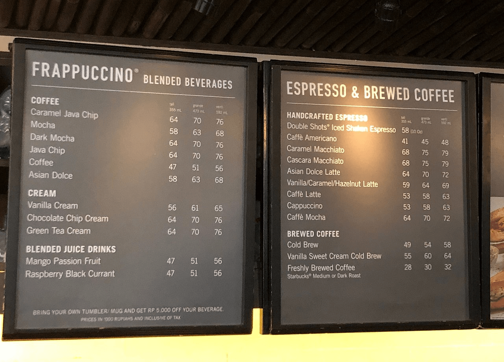

Que es?
Starbucks Corporation conocido mundialmente como Starbucks es una cadena internacional de cafeterías que cotiza en la bolsa NASDAQ. Fue fundada en 1971, en Seattle, estado de Washington, Estados Unidos. .
Es considerada la compañía de comercialización de café más grande del mundo, con más de 24.000 locales en 70 países. Starbucks ofrece café elaborado, bebidas y una variedad de bocadillos. También tiene a la venta productos relativos al rubro como tazas, termos y café en grano, así como libros y CD de música y películas. Sus cafeterías suelen encontrarse en lugares con mucha afluencia, como aeropuertos, centros comerciales, centros históricos, museos, universidades, entre otros.

Tipos de servicios
Starbucks® también te ofrece todo lo que acompaña a una experiencia de café completa y gratificante. Ofrecemos una selección de tés premium, pasteles finos y otras delicias para complacer tu paladar. Asimismo, la música que escuchas en la tienda se elige por su arte y atractivo.
A continuacion nombrare algunos servicios muy comprados en Starbucks.
Cafeina

Bebidas
Starbucks como unico servicio no vende cafe, tambien venden otro tipo de alimentos como bebidas que nombrare las que me parecieron las mas habituales.
Inicio de Starbucks y su acciones
El año de 1971 trajo al mundo diversos cambios sociales y económicos gracias a los últimos años de la Guerra de Vietnam y las muestras del poder nuclear de Estados Unidos. Pero no todo era tensión, también había esperanza con el nacimiento de diversos negocios que a la larga se convertirían en auténticas industrias internacionales. Uno de esos negocios era Starbucks, un pequeño local que en 1971 abría sus puertas en Seattle gracias al entusiasmo de sus tres socios: el profesor de inglés Jerry Baldwin, el profesor de historia Zev Siegel, y el escritor Gordon Bowker. la-historia-de-starbucks-un-caso-de-esfuerzo-y-exito Foto: Flickr. Starbucks fue una idea que nació gracias a la inspiración de sus tres fundadores por el empresario cafetero Alfred Peet, el mismo hombre que acostumbró a los estadounidenses a consumir el café en taza en lugar de lata. De hecho, fue el mismo Alfred quien le enseñó a Jerry, Zev y Gordon su estilo de tostado antes de abrir su primer Starbucks. Los primeros años pasaron para Starbucks, un negocio que crecía poco a poco hasta llegar a tener cuatro tiendas. Sería 11 años después que en 1982 la empresa tendría la incorporación de Howard Schultz, un hombre que llegó a cambiar las cosas. La visión detrás de Howard Con la llegada de Howard como director de operaciones y marketing de Starbucks comenzaron a fluir las ideas y sería en 1983 cuando en un viaje a Italia, el peculiar empresario quedó cautivado por la tradición de sus cafeterías. La visión de Howard Schultz fue replicar ese modelo de establecimientos en Estados Unidos usando a Starbucks. “Mi conclusión fue que no solamente serviríamos cafés, sino que crearíamos un ambiente en el que la intimidad de la relación con el espacio y la experiencia del café pudiera cobrar vida”, cuanta Howard en su autobiografía. Claro que en ese momento la idea parecía una locura pues estaba totalmente alejado de lo acostumbrado en Estados Unidos. De hecho, la iniciativa causó molestia entre los socios quienes rechazaron firmemente la propuesta.